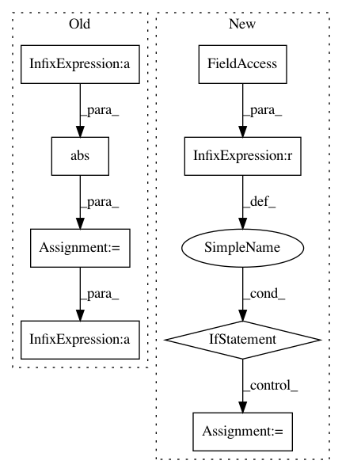

21c16153ecd473a027df2af1e9a4fd3c71810e1a,pymc3/variational/callbacks.py,CheckLossConvergence,__call__,#CheckLossConvergence#Any#Any#Any#,26
Before Change
def __call__(self, approx, hist, i):
if hist is None or i < self.window_size or i % self.every:
return
diff = ((hist[-self.window_size:] - hist[-self.window_size-1:-1])
/ hist[-self.window_size-1:-1])
mean = diff.mean()
// unbiased std of mean
std = diff.std() / (self.window_size - 1)**.5
t = abs(mean / std)
p = stats.t.cdf(t, df=self.window_size) - .5
// 1 - confidence is lower allowed p
if p < self.critical:
raise StopIteration
After Change
def __call__(self, approx, hist, i):
if hist is None or i < self.every or i % self.every:
return
if self.steps is None:
window = int(max(0.1 * hist.size // self.every, 2.0))
else:
window = int(max(0.1 * self.steps // self.every, 2.0))
losses = hist[::self.every][-window:]
diff = np.abs((losses[1:]-losses[:-1])/losses[:-1])
mean = np.mean(diff)
med = np.median(diff)
In pattern: SUPERPATTERN
Frequency: 3
Non-data size: 8
Instances
Project Name: pymc-devs/pymc3
Commit Name: 21c16153ecd473a027df2af1e9a4fd3c71810e1a
Time: 2017-04-14
Author: maxim.v.kochurov@gmail.com
File Name: pymc3/variational/callbacks.py
Class Name: CheckLossConvergence
Method Name: __call__
Project Name: pymc-devs/pymc3
Commit Name: d493caa1278c158b78aa02c8f23d4f56c311f975
Time: 2017-04-14
Author: maxim.v.kochurov@gmail.com
File Name: pymc3/variational/callbacks.py
Class Name: CheckLossConvergence1
Method Name: __call__
Project Name: tensorflow/cleverhans
Commit Name: fcf1e2a18e72dd42280f04a50fce3eb4e0b20fcf
Time: 2018-04-13
Author: kurakin@google.com
File Name: cleverhans/attacks.py
Class Name: BasicIterativeMethod
Method Name: generate